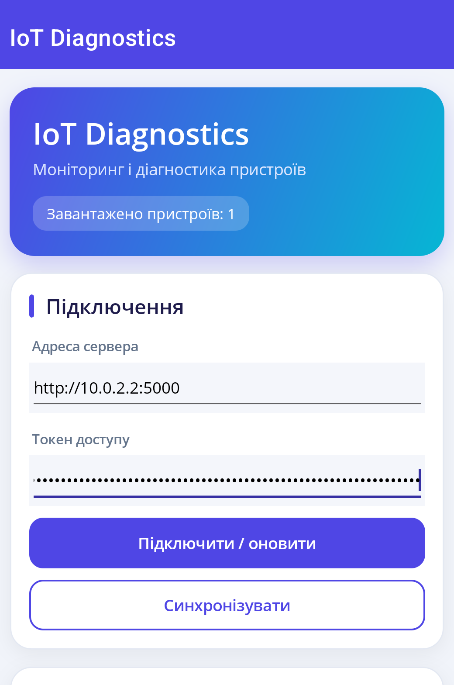
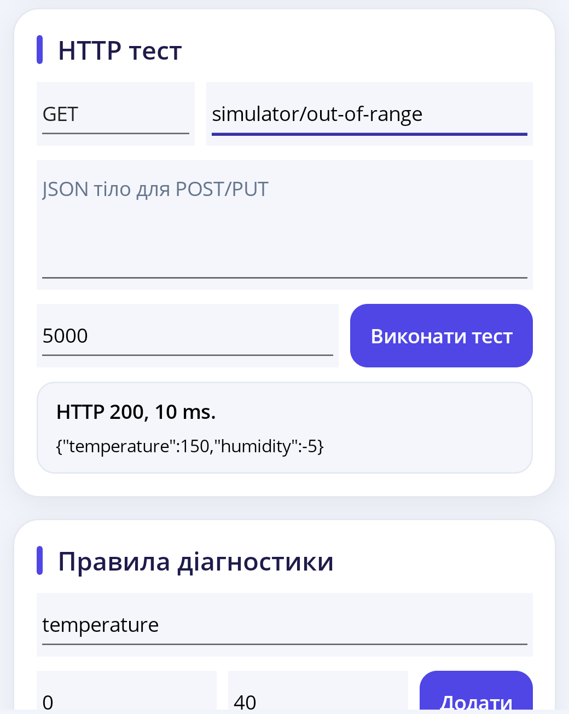
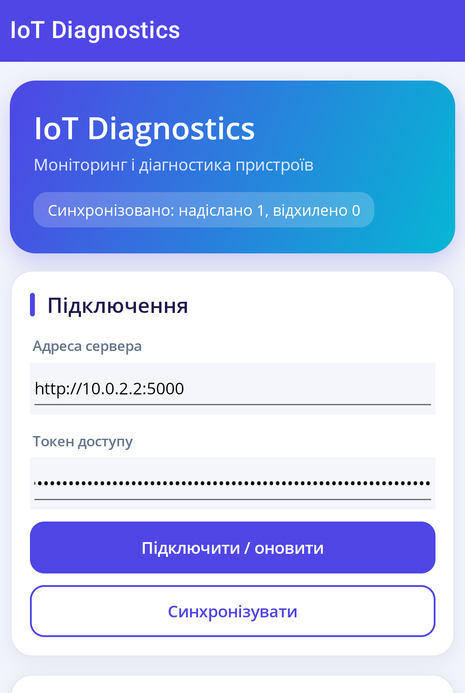
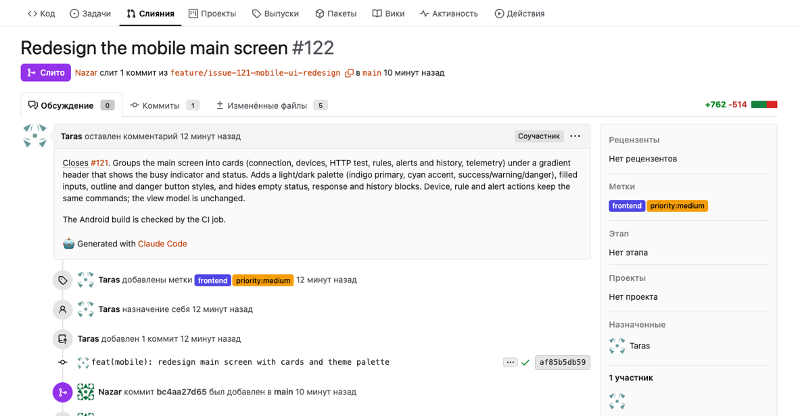

Підготовка перед захистом
- VS Code. Відкрий клон проєкту на
bc4aa27. Підготуй вкладкиIoT.Mobile.csproj,MainPage.xaml,MainViewModel.cs,DeviceRepository.cs,SyncEngine.csіChartData.cs. У VS Code ⌃G відкриває перехід до номера рядка. Для живого Android-показу підготуй збірку з правкою запуску. На сторінці також є фрагменти коду з точними посиланнями. - Terminal на Mac. Запусти API. У другій вкладці перевір, що він повертає
"status":"ok". Підготуй тестовий токен до початку показу. - Android Studio → Device Manager. Натисни ▶ біля mpp_phone. Відкрий IoT Diagnostics. Для API на цьому Mac вкажи
http://10.0.2.2:5000й встав значення поляtokenв поле Токен доступу. - Дані для демонстрації. Підготуй Demo sensor з URL
http://127.0.0.1:5000, правиломtemperatureу межах0–40і двома звичайними вимірюваннями. Підключися до API, щоб наповнити кеш. Перевір, що черга порожня. - Браузер. Відкрий свій PR №122 з редизайном, PR №112 з офлайном, своє рев’ю №102, IoT validation №58 і SonarQube №59. Тримай сценарій у сусідній вкладці.
Повна підготовка і команди запуску · Перейти до кліків в Android
0:00–0:45
Вступ · що я зробив
Покажи. Почни з градієнтної шапки IoT Diagnostics. Вкажи на картку «Підключення», кнопку синхронізації та заголовок «Пристрої» нижче.
Доброго дня. Я Тарас Загорський, група ІПЗ-31. IoT Diagnostic Platform перевіряє HTTP API пристроїв, зберігає вимірювання і показує результати діагностики. Я відповідав за клієнт на .NET MAUI для Android і Windows. В останньому оновленні я переробив головний екран і стилі Android. Моя частина також охоплює роботу зі списком пристроїв, редактор тестового запиту, відображення відповіді, графік і офлайн-синхронізацію. Спочатку покажу, як це пов’язано в коді, потім повторю той самий шлях в Android-емуляторі.

0:45–2:45
Код · новий дизайн, XAML і ViewModel
Покажи у VS Code. Відкрий IoT.Mobile.csproj і виділи обидва цільові фреймворки. Перемкнися на MainPage.xaml.cs і вкажи на BindingContext. У MainPage.xaml знайди прив’язку SyncCommand і OfflineStatus.
Цільові платформи IoT.Mobile.csproj · 3–5
<PropertyGroup>
<TargetFrameworks>net10.0-android</TargetFrameworks>
<TargetFrameworks Condition="$([MSBuild]::IsOSPlatform('windows'))">$(TargetFrameworks);net10.0-windows10.0.19041.0</TargetFrameworks>BindingContext MainPage.xaml.cs · 2–5
public partial class MainPage : ContentPage
{
public MainPage(MainViewModel vm) { InitializeComponent(); BindingContext = vm; }
}Кнопки підключення, смуга офлайн і команда Sync MainPage.xaml · 43–52
<Label Text="Токен доступу" Style="{StaticResource FieldLabel}" />
<Entry Text="{Binding AccessToken}" Placeholder="Bearer токен" IsPassword="True" />
<Button Text="Підключити / оновити" Command="{Binding RefreshCommand}" />
<Border Style="{StaticResource InfoStrip}">
<Border.Triggers>
<DataTrigger TargetType="Border" Binding="{Binding OfflineStatus}" Value=""><Setter Property="IsVisible" Value="False" /></DataTrigger>
</Border.Triggers>
<Label Text="{Binding OfflineStatus}" TextColor="{StaticResource Accent}" FontSize="13" />
</Border>
<Button Text="Синхронізувати" Style="{StaticResource OutlineButton}" Command="{Binding SyncCommand}" />У файлі проєкту Android увімкнено як ціль збірки, а Windows додається при збірці на Windows. На екрані XAML описує поля й кнопки. Через BindingContext він отримує MainViewModel. Кнопка синхронізації викликає команду, а текст стану оновлюється з властивості OfflineStatus.
Покажи редизайн. У MainPage.xaml відкрий градієнт (13–23), потім смугу статусу з DataTrigger (24–30). У Styles.xaml покажи стиль Card, а в Colors.xaml — кольори теми. Натисни «Підключити / оновити» в Android і покажи, де з’явився статус.
- На 23 покажи
Busy. - На 27 знайди
DataTriggerдля порожнього статусу. - На 35 вкажи на
Card. - На 52 покажи
SyncCommand.

Індикатор Busy та видимість статусу MainPage.xaml · 23–30
<ActivityIndicator Grid.RowSpan="2" Grid.Column="1" Color="White" IsRunning="{Binding Busy}" IsVisible="{Binding Busy}" WidthRequest="28" HeightRequest="28" VerticalOptions="Center" />
<Border Grid.Row="2" Grid.ColumnSpan="2" Margin="0,10,0,0" Padding="12,6" StrokeThickness="0" BackgroundColor="#33FFFFFF" HorizontalOptions="Start">
<Border.StrokeShape><RoundRectangle CornerRadius="12" /></Border.StrokeShape>
<Border.Triggers>
<DataTrigger TargetType="Border" Binding="{Binding Status}" Value=""><Setter Property="IsVisible" Value="False" /></DataTrigger>
</Border.Triggers>
<Label Text="{Binding Status}" TextColor="White" FontSize="13" LineBreakMode="WordWrap" />
</Border>Спільний стиль картки Styles.xaml · 435–444
<Style TargetType="Border" x:Key="Card">
<Setter Property="BackgroundColor" Value="{AppThemeBinding Light={StaticResource SurfaceLight}, Dark={StaticResource SurfaceDark}}" />
<Setter Property="Stroke" Value="{AppThemeBinding Light={StaticResource OutlineLight}, Dark={StaticResource OutlineDark}}" />
<Setter Property="StrokeThickness" Value="1" />
<Setter Property="StrokeShape" Value="RoundRectangle 18" />
<Setter Property="Padding" Value="16" />
<Setter Property="Shadow">
<Shadow Brush="{StaticResource BlackBrush}" Opacity="0.06" Radius="14" Offset="0,4" />
</Setter>
</Style>Додатково. Якщо попросять показати темну тему, відкрий «Налаштування Android → Екран → Темна тема» та повернись до застосунку. Зверни увагу на фон і межі карток.
У PR №122 я зібрав екран із шести карток, щоб оператор швидко знаходив потрібну дію. Заголовок показує поточний стан і завантаження. DataTrigger прибирає порожні блоки, а AppThemeBinding вибирає кольори світлої або темної теми. Команди залишилися в тій самій ViewModel. Кнопка видалення має окремий стиль, щоб її легше відрізнити від збереження.

Кольори індиго й ціану · DangerButton · Diff нового дизайну
Потім. Відкрий MainViewModel.cs на методі ApplyAccessToken і IoTApiClient.cs на методах отримання й редагування пристроїв. Для пояснення повторних спроб відкрий RetryPolicy.cs на IsIdempotent і canRetry.
Збереження і додавання Bearer-токена MainViewModel.cs · 77–86
private async Task ApplyAccessToken()
{
// The token is kept in platform secure storage, never in plain preferences.
if (string.IsNullOrWhiteSpace(AccessToken))
AccessToken = await SecureStorage.Default.GetAsync("access-token") ?? "";
else
await SecureStorage.Default.SetAsync("access-token", AccessToken.Trim());
client.DefaultRequestHeaders.Authorization = string.IsNullOrWhiteSpace(AccessToken)
? null
: new System.Net.Http.Headers.AuthenticationHeaderValue("Bearer", AccessToken.Trim());Типізовані виклики для пристроїв IoTApiClient.cs · 32–45
public Task<List<Device>> GetDevicesAsync(CancellationToken ct = default) =>
GetAsync<List<Device>>("api/devices", ct);
public Task<Device> GetDeviceAsync(int id, CancellationToken ct = default) =>
GetAsync<Device>(Path(id), ct);
public Task<Device> CreateDeviceAsync(Device device, CancellationToken ct = default) =>
SendAsync<Device>(HttpMethod.Post, "api/devices", device, ct);
public Task<Device> UpdateDeviceAsync(int id, Device device, CancellationToken ct = default) =>
SendAsync<Device>(HttpMethod.Put, Path(id), device, ct);
public Task DeleteDeviceAsync(int id, CancellationToken ct = default) =>
SendAsync(HttpMethod.Delete, Path(id), null, ct);RetryPolicy.cs · рядки 44–76 · Мій PR №85
Клієнт тримає токен у SecureStorage і передає його як Bearer. Типізований IoTApiClient використовується, зокрема, для завантаження й редагування пристроїв через репозиторій. RetryPolicy повторює тимчасові збої лише для дозволених ідемпотентних методів. POST створення не повторюється автоматично на цьому рівні, бо це може створити другий запис.
Живий показ · Android і код поруч
2:45–4:00
Пристрої · підключення, створення, редагування
- У картці Підключення натисни Підключити / оновити. Дочекайся «Завантажено пристроїв». Натисни Оберіть пристрій → Demo sensor.
- Для показу створення введи в поле Назва окрему назву
Demo CRUD, URLhttp://127.0.0.1:5000і описПерша версія. Прокрути нижче, натисни Створити і вибери новий запис у списку. - Зміни опис на
Оновлено в Android→ натисни Зберегти → обери Demo CRUD повторно. Покажи нове значення. - Якщо потрібно показати видалення, натисни Видалити саме для Demo CRUD. Повернися до Demo sensor із підготовленим правилом та історією.
Емулятор звертається до API на Mac через 10.0.2.2. Адреса пристрою, яку вводжу в картці, потрібна серверу для запиту до симулятора. Створення й редагування йдуть через один метод репозиторію. За ідентифікатором він визначає, чи створити пристрій, чи оновити існуючий.

У коді. Покажи, як Update() додає ID вибраного запису, а SaveAsync() обирає створення чи оновлення.
Дії зі списком і вибраним пристроєм MainViewModel.cs · 142–145
private int Id() => SelectedDevice?.Id ?? throw new InvalidOperationException("Оберіть пристрій.");
private async Task Create() { var saved = await (await Repository()).SaveAsync(Input()); await Refresh(); ReportSaved(saved); }
private async Task Update() { var device = Input(); device.Id = Id(); var saved = await (await Repository()).SaveAsync(device); await Refresh(); ReportSaved(saved); }
private async Task Delete() { var saved = await (await Repository()).DeleteAsync(Id()); SelectedDevice = null; await Refresh(); ReportSaved(saved); }DeviceRepository.cs · рядки 101–112 · Мій PR про створення, редагування й видалення
4:00–5:10
HTTP-тест · поля, запит і відповідь
- В Android вибери Demo sensor. Прокрути до блока HTTP тест і вибери GET. Праворуч від GET у полі шляху введи
simulator/normal. - Тіло залиш порожнім. У полі таймауту постав
5000. Сховай клавіатуру кнопкою Назад і натисни Виконати тест. - Під кнопкою покажи HTTP 200, фактичну тривалість у мілісекундах і поле
temperatureу JSON.
Зараз оператор вибирає метод, шлях і таймаут. Клієнт надсилає параметри до ASP.NET Core. Сам бекенд виконує запит до пристрою і повертає вимірювання. На екрані видно HTTP-код пристрою, час виконання й тіло відповіді.

У коді. У MainPage.xaml покажи прив’язки полів і кнопку SendCommand. У Send() знайди межі таймауту, PostAsJsonAsync, ResponseSummary і ResponseBody. Це окремий шлях ручного тесту у ViewModel. Для зв’язку із сервером відкрий Program.cs, маршрут /requests.
Поля HTTP-тесту · XAML 98–114 · Метод Send · рядок 146 · Маршрут API · рядок 101 · Мій редактор HTTP-тесту · Мій показ відповіді
5:10–6:35
Аномалія, історія, графік і CSV
- Під HTTP-формою знайди Правила діагностики. Якщо правило ще не збережене, введи
temperature, мінімум0, максимум40→ Додати. Досить одного правила на це поле. - У шляху заміни
simulator/normalнаsimulator/out-of-rangeі натисни Виконати тест. Вкажи на HTTP 200 і"temperature":150.
HTTP 200 означає успішну відповідь пристрою. Значення всередині JSON перевіряється окремо. Температура 150 виходить за інтервал від 0 до 40, тому її бачимо як попередження й пік на графіку.

- Прокрути до Попередження та історія. Покажи запис про вихід за межі. Вибери нове попередження → Підтвердити. Покажи, як змінюється кількість непідтверджених.
- У нижній картці Графік телеметрії залиш
temperature→ Оновити праворуч від поля. Покажи пік і максимум150.00. За потреби натисни Експортувати CSV, покажи системне меню, закрий його кнопкою Назад.
У списку видно нове попередження. Після підтвердження воно зникає зі списку непідтверджених, а вимірювання лишається в історії. Нижче перевіряю, що максимум графіка збігається з відповіддю 150.


У коді. У LoadTelemetry() покажи, як клієнт отримує числові точки й передає їх у ChartData.Downsample. Потім покажи, як Series оновлює графік. Для CSV відкрий Export().
Оновлення графіка MainViewModel.cs · 209–217
var field = Uri.EscapeDataString(TelemetryPath);
var data = await client.GetFromJsonAsync<TelemetryData>(Url($"api/devices/{Id()}/telemetry?field={field}"))
?? throw new JsonException("Порожня відповідь аналітики.");
var points = ChartData.Downsample(data.Points.Select(point => new ChartPoint(point.Timestamp, point.Value)).ToList(), ChartPoints);
Series = [new LineSeries<double> { Values = points.Select(point => point.Value).ToArray(), Name = data.Field }];
OnPropertyChanged(nameof(Series));
TelemetrySummary = data.Points.Count == 0
? $"Немає числових даних. Пропущено: {data.Skipped}/{data.Examined}"
: $"Мін: {data.Minimum:F2}; макс: {data.Maximum:F2}; середнє: {data.Average:F2}. Пропущено: {data.Skipped}/{data.Examined}";Для довгої історії я скорочую ряд до 120 точок. Алгоритм LTTB вибирає характерні точки за площею трикутників. Підсумкові мінімум і максимум приходять із відповіді сервера, тому ці числа не перераховуються тільки за намальованими точками.
Алгоритм LTTB · Експорт у файл і системне меню · Мій PR №96 · Скриншот графіка
6:35–7:50
Офлайн · відключення, редагування і кеш
- Повернися на верх екрана, залиш Demo sensor вибраним. Переконайся, що перед початком черга порожня. Мишею двічі потягни вниз від верхнього краю екрана Android.
- Натисни Режим польоту / Airplane mode. Якщо Wi-Fi лишився активним, відкрий Інтернет / Internet і вимкни Wi-Fi. Закрий панель та дочекайся розриву з’єднання.
- У полі Опис введи
android-offline-demo. Сховай клавіатуру. Нижче під параметрами моніторингу натисни Зберегти, середню кнопку в ряду. - Прокрути догори. Покажи «Немає зв’язку» в шапці, а під кнопкою підключення — «Офлайн: дані з кешу» й Змін у черзі: 1. Пристрій можна повторно вибрати зі списку.
Я зберіг редагування після втрати мережі. У списку є останні дані з SQLite, а клієнт наклав на них локальну правку. Лічильник показує одну операцію, яку ще потрібно надіслати на сервер.

У коді. У LoadAsync() покажи обидві гілки: онлайн оновлюється кеш, офлайн завантажується останній збережений список. У SaveAsync() на 109–112 покажи QueueSaveAsync(). В OfflineStore.cs відкрий схему таблиці черги.
Перемикання на кеш DeviceRepository.cs · 74–87
public async Task<DeviceList> LoadAsync(CancellationToken ct = default)
{
var pending = await store.GetPendingAsync(ct);
try
{
var devices = await api.GetDevicesAsync(ct);
await store.ReplaceDevicesAsync(devices, ct);
return new DeviceList(PendingOverlay.Apply(devices, pending), false, null, pending.Count);
}
catch (Exception e) when (IoTApiClient.IsOffline(e))
{
var cached = await store.GetDevicesAsync(ct);
return new DeviceList(PendingOverlay.Apply(cached, pending), true, await store.GetLastSyncAsync(ct), pending.Count);
}Запис зміни в чергу DeviceRepository.cs · 109–113
catch (Exception e) when (IoTApiClient.IsOffline(e))
{
await QueueSaveAsync(device, ct);
return false;
}Схема SQLite і черга · Мій PR №89 · Як стан кешу потрапляє на екран
7:50–9:15
Синхронізація · від кнопки до запису на сервері
- Розгорни швидкі налаштування Android ще раз. Вимкни Режим польоту, увімкни Wi-Fi та дочекайся підключення. Повернися в застосунок.
- Натисни контурну кнопку Синхронізувати у картці «Підключення». Дочекайся повідомлення у верхній шапці Синхронізовано: надіслано 1, відхилено 0.
- Знову натисни Оберіть пристрій → Demo sensor. Покажи збережений опис. Якщо репетируєш удруге, введи інше значення, щоб воно відрізнялося від попереднього.
Повернув підключення і вручну натиснув «Синхронізувати». Спочатку SyncEngine відправляє операції з черги. Успішну операцію знімає з черги, а потім завантажує свіжий список і оновлює кеш. Повторний вибір пристрою показує, що сервер повертає новий опис.


У коді. У MainViewModel.Sync() покажи виклик рушія та формування повідомлення. У SyncEngine.PushAsync() знайди CompleteAsync(), FailAsync() і RecordAttemptAsync().
Команда Sync і повідомлення в Android MainViewModel.cs · 121–130
private async Task Sync()
{
await ApplyAccessToken();
await Repository();
var report = await new SyncEngine(api!, offlineStore!).SyncAsync();
await Refresh();
Status = report.Completed
? $"Синхронізовано: надіслано {report.Sent}, відхилено {report.Rejected}"
: $"Синхронізацію перервано: {report.Interruption}";
}Успіх, відхилення й переривання SyncEngine.cs · 65–77
await store.CompleteAsync(operation.Sequence, ct);
sent++;
}
catch (ApiException e) when (e.IsPermanent)
{
await store.FailAsync(operation.Sequence, e.Message, ct);
rejected++;
}
catch (Exception e) when (e is ApiException || IoTApiClient.IsOffline(e))
{
await store.RecordAttemptAsync(operation.Sequence, e.Message, ct);
return (sent, rejected, e.Message);
}Якщо сервер остаточно відхиляє конкретну правку, вона позначається як невдала і решта черги може піти далі. Якщо зникає мережа, SyncEngine записує спробу, переривається і залишає невідправлене для наступної синхронізації.
Послідовність push → завантаження стану · Тести відхилення й втрати зв’язку
9:15–10:45
Forgejo · мій редизайн і ланцюг із рев’ю
- Відкрий issue №121 → PR №122. Покажи гілку
feature/issue-121-mobile-ui-redesign, коміт af85b5d, Files changed і merge bc4aa27. Цей PR підтверджує редизайн, а ланцюг із задокументованим ручним рев’ю покажи на №112. - Відкрий issue №92. Покажи виконавця та чотири критерії: кеш, черга, ручна синхронізація та графік зі скороченим рядом.
- Перейди в PR №112. Назви гілку
feature/issue-92-offline-state-sync-app. Відкрий Commits і покажи dd30c666 та 6bd747da. У повідомленнях єRefs #92. - У Files changed знайди
SyncCommandта підключенняDeviceRepository. Відкрий апрув після перевірки офлайн → merge 35f820d5 у main. - Для B3 відкрий моє зауваження в чужому PR №102. Потім покажи коміт із правкою та мою повторну перевірку.
Для нового дизайну я показую окремий PR і diff стилів. Для офлайн-функції відкриваю задачу №92, її два коміти і зміни в екрані. У рев’ю зафіксовано перевірку з вимкненим API та повторну синхронізацію, після чого PR змерджено. Окремо у PR №102 я знайшов, що некоректний JSON на .NET 10 повертав 500. Після виправлення відтворив той самий запит і отримав 400.


10:45–12:15
Автотести, Actions і підсумок
- Відкрий OfflineSyncTests.cs, рядки 68–81. Покажи, як тест обриває з’єднання після першої операції і перевіряє, що наступна лишилася в черзі. Якщо запитають про внесок в API-тести, відкрий мій PR №37.
- Відкрий Forgejo · IoT validation №58 → linux-validation → Unit tests and coverage та Integration tests and coverage. Далі відкрий Enforce coverage threshold, Acceptance run with two worker nodes та Android build.
- Покажи локальний звіт Coverlet / ReportGenerator і 11/11 приймальних перевірок. Потім відкрий SonarQube №59 → analysis → Analyze backend and import coverage. Для оцінки C4 потрібна також актуальна кількість critical/major в Issues SonarQube.

Тест перерваної синхронізації OfflineSyncTests.cs · 68–81
public async Task LosingTheConnectionStopsAndKeepsTheRest()
{
await store.EnqueueAsync(OperationKind.UpdateDevice, 1, payload: Device(1, "A"));
await store.EnqueueAsync(OperationKind.UpdateDevice, 2, payload: Device(2, "B"));
server.Reply(HttpStatusCode.OK, "{\"id\":1,\"name\":\"A\",\"baseUrl\":\"http://a\"}")
.Fail(new HttpRequestException("network unreachable"));
var report = await new SyncEngine(api, store).SyncAsync();
Assert.False(report.Completed);
Assert.Equal("network unreachable", report.Interruption);
var left = Assert.Single(await store.GetPendingAsync());
Assert.Equal((2, 1), (left.DeviceId, left.Attempts));
}Цей тест перевіряє, що після обриву мережі черга не втрачає невідправлену операцію. На показаному коміті локально пройшли 245 модульних і 110 інтеграційних тестів. Coverlet виміряв 96,3% рядків у тестованих збірках без MAUI та згенерованих міграцій. У Forgejo видно окремі кроки для тестів, порога покриття, приймального прогону й Android-збірки.
Підсумую. На Android я показав шлях від запиту й діагностики до збереження зміни без мережі та її доставки після відновлення зв’язку. У коді й Forgejo видно, якими методами та комітами це реалізовано. Дякую, готовий до запитань.
Конфігурація CI · Результати й крайні випадки · Запитання і мікрозміни
Запуск перед репетицією
Стан Android на bc4aa27. Збірка без правки проходить, але під час запуску MainPage створюється до завантаження ресурсів App.xaml і Android показує StaticResource not found for key Primary. Для знімків використав локальну правку: переніс отримання сторінки з DI в CreateWindow(), після InitializeComponent(). На екрані та в логіці команд змін немає.
Термінал 1 · API з актуального клону
Якщо відкритий локальний клон відповідає bc4aa27, працюй у ньому. Для окремого чистого запуску виконай команди в каталозі, де ще немає iot-defense-demo.
git clone https://git.cvv-sandbox.eu.cc/Nazar/iot-diagnostic.git iot-defense-demo
cd iot-defense-demo
git switch --detach bc4aa27
ASPNETCORE_ENVIRONMENT=Development dotnet run --project src/IoT.Api --urls http://127.0.0.1:5000Для локального емулятора на macOS цього достатньо. Якщо запускаєш через docker compose up --build, адреса API для емулятора та сама, а URL пристрою на стороні контейнера — http://127.0.0.1:8080.
Термінал 2 · токен та APK
Запусти емулятор через Device Manager. Для bc4aa27 завантаж патч запуску й застосуй його в окремому клоні до збірки. Команди виконуй із кореня цього клону. Токен встав до початку показу екрана.
git apply --check ~/Downloads/android-startup.patch
git apply ~/Downloads/android-startup.patchcurl -fsS http://localhost:5000/
curl -fsS -X POST http://localhost:5000/api/auth/token \
-H 'Content-Type: application/json' \
-d '{"user":"demo","role":"Admin","group":"default"}'
dotnet workload restore src/IoT.Mobile/IoT.Mobile.csproj
dotnet build src/IoT.Mobile -f net10.0-android -p:EmbedAssembliesIntoApk=true
adb devices
adb install -r src/IoT.Mobile/bin/Debug/net10.0-android/com.companyname.iot.mobile-Signed.apkЯкщо збірка не знаходить Android SDK або JDK, додай -p:AndroidSdkDirectory=… і -p:JavaSdkDirectory=…. На Mac adb зазвичай лежить у ~/Library/Android/sdk/platform-tools. З кількома пристроями передай adb -s <ID> install -r …, де ID бере команда adb devices.
Перед показом перевір токен. На bc4aa27 недійсний токен може закрити Android-застосунок при HTTP 401. У такому разі відкрий його знову й встав новий токен.
В Android · як підготувати Demo sensor
- Натисни Підключити / оновити. Для створення нового ввійди у поля Назва та URL пристрою, введи
Demo sensorтаhttp://127.0.0.1:5000для прямого запуску .NET. Натисни Створити біля низу картки. - У списку вибери Demo sensor. Прокрути до Правила діагностики. Для нового пристрою введи
temperature, мінімум0, максимум40, натисни Додати. - Двічі запусти
GET simulator/normal. Повернися до верху. Якщо є черга з минулого прогону, синхронізуйся і перевір результат до початку показу.
Мої докази за методичкою
B1 / D1 · ланцюг issue → merge · B2 · мої задачі · B3 · мої рев’ю · C0–C5 · тести й технічна якість · E1 / E2 · відповіді та зміни · E3 · запуск
B2 · мої 15 закритих задач
Зістав дати закриття з повідомленнями про командні чекпоінти. Поля дедлайнів у задачах порожні.
| Issue | Завдання | Закрито (UTC) |
|---|---|---|
| №121 | Redesign the mobile main screen | 2026-11-21 |
| №92 | Show offline state and sync in the app | 2026-11-20 |
| №91 | Downsample telemetry for phone charts | 2026-11-15 |
| №86 | Keep the mobile app usable offline | 2026-11-13 |
| №77 | Extract a typed API client for the mobile app | 2026-11-09 |
| №55 | Implement telemetry charts | 2026-11-04 |
| №53 | Implement alert and event history | 2026-11-05 |
| №45 | Create HTTP request editor | 2026-10-23 |
| №44 | Show response status timing and JSON | 2026-10-24 |
| №43 | Create device list and registration screen | 2026-10-21 |
| №42 | Implement device editing and deletion | 2026-10-22 |
| №40 | Implement loading and error states | 2026-10-20 |
| №35 | Add application connection settings | 2026-10-17 |
| №34 | Add integration and acceptance tests | 2026-10-17 |
| №29 | Define MAUI architecture and navigation | 2026-10-17 |
B3 · чотири мої результативні review
- №102. Некоректний JSON на .NET 10 давав 500. Після виправлення перевірив 400. Зауваження · Перевірка
- №33. Новий пристрій без вимірювань давав 404 у статистиці. Підтвердив підсумок 0 із 0. Зауваження · Перевірка
- №28. Запропонував обмежити час запиту й записувати таймаут у вимірюванні. Перевірив обидва результати. Зауваження · Перевірка
- №16. Оновлення відсутнього пристрою могло дати 500. Після правки підтвердив 404. Зауваження · Перевірка
A1–A3 · що відкрити, якщо запитають про процес
A1. Підготуй дати двох чекпоінтів і підтвердження здачі. A2. У історії main покажи свої змістовні коміти, гілку у PR №112, Refs #92 та README. A3. Якщо є зауваження викладача, покажи відповідний issue і дату виправлення до наступного чекпоінта.
Для журналу рішень можеш пояснити п’ять рішень зі своїх PR: прив’язки MAUI №38, типізований HTTP-клієнт №85, локальний кеш №89, LTTB №96 і редизайн і тематичні стилі №122.
C0–C5 · тести, платформи, дані
C0. Основний показ — Android. За пам’яткою жива демонстрація однієї ОС дає 0,5 рівня C0. Якщо викладач просить другу ОС, повтори той самий HTTP-тест на Windows після репетиції збірки.
C1. Приймальний прогін, 11/11 перевіряє доступ і валідацію, запис п’яти сценаріїв симулятора, вузли та логи. У симуляторі є normal, out-of-range, error, invalid-json, timeout. Сценарій приймання
| C2 · випадок | Що показати |
|---|---|
| Некоректне введення | У полі таймауту введи 99 → Виконати тест. Клієнт очікує 100–60000 мс і показує пояснення. Перевірка |
| Некоректний JSON | GET simulator/invalid-json. В історії видно помилку розбору. Скриншот |
| Таймаут | GET simulator/timeout з 1000 мс. У вимірюванні видно Request timed out, застосунок лишається відкритим. Скриншот |
| Межові значення | Інтеграційний тест перевіряє границі інтервалу моніторингу на 4, 5, 86400 і 86401 с. Тест |
| Журнали | Після приймального прогону в журналах API й двох воркерів немає fail:, crit: або Unhandled exception. Результат |
C3 / C4. Що відкрити в Actions · Підсумок dotnet test · Покриття · SonarQube bc4aa27 · Попередній локальний аналіз 39ac333.

C5. У клієнтському SQLite є параметризовані команди й транзакції для оновлення кешу та об’єднання змін в черзі. Для серверної частини в моделі даних можеш показати окремі сутності, FK, індекси, параметризований доступ і атомарний запис вимірювання з подією. Локальне сховище · Модель даних сервера
Що можуть запитати мене
Це підготовлені відповіді за кодом проєкту. Для E1 звір їх із банком курсу.
- Чому в Android адреса API 10.0.2.2, а у пристрою 127.0.0.1?
- 10.0.2.2 веде з Android Emulator на Mac. 127.0.0.1 в адресі пристрою інтерпретує бекенд, який звертається до свого симулятора.
- Чим черга відрізняється від кешу?
- Кеш — остання отримана копія списку. Черга — локальні операції, які треба відправити. Репозиторій накладає операції на копію перед показом.
- Що відбувається з 409 і з обривом мережі?
- Остаточне відхилення позначається як невдала операція й не блокує решту. Збій зв’язку зупиняє синхронізацію, а невідправлені дані залишаються для наступної спроби.
- Чому є 200 і водночас попередження?
- HTTP-код описує транспортну відповідь. Правило діагностики перевіряє зміст JSON, наприклад температуру поза діапазоном.
- Чому для створення немає автоматичних повторів HTTP?
- Якщо POST виконався на сервері, але відповідь загубилася, автоматичний повтор може створити ще один запис. RetryPolicy обмежує автоматичні повтори ідемпотентними методами.
- Навіщо LTTB і чи змінює він максимум?
- Скорочує кількість точок для рендеру, залишаючи першу, останню та характерні точки. Підсумковий максимум приходить від API за повним набором.
E2 · дві мікрозміни наживо
- Зменшити ліміт графіка до 80 точок. У рядку 18 зміни
ChartPoints = 120на80. Після збірки онови графік для пристрою, у якого понад 80 числових вимірювань. Для короткої історії кількість точок збережеться. - Поставити початковий таймаут 2 секунди. У рядку 27 знайди
timeoutMs = "5000"та зміни на"2000". Перезбери клієнт, покажи число 2000 після запуску та виконайsimulator/timeout.